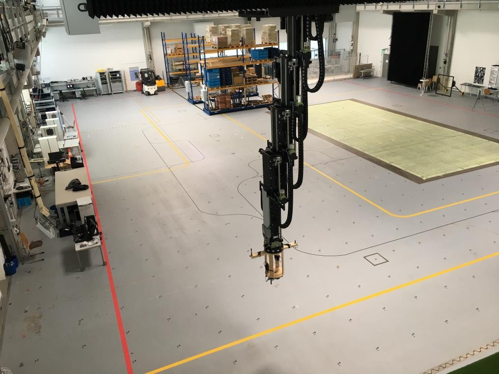
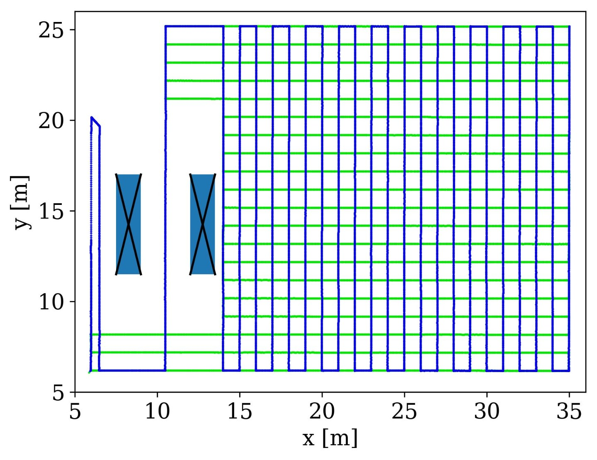
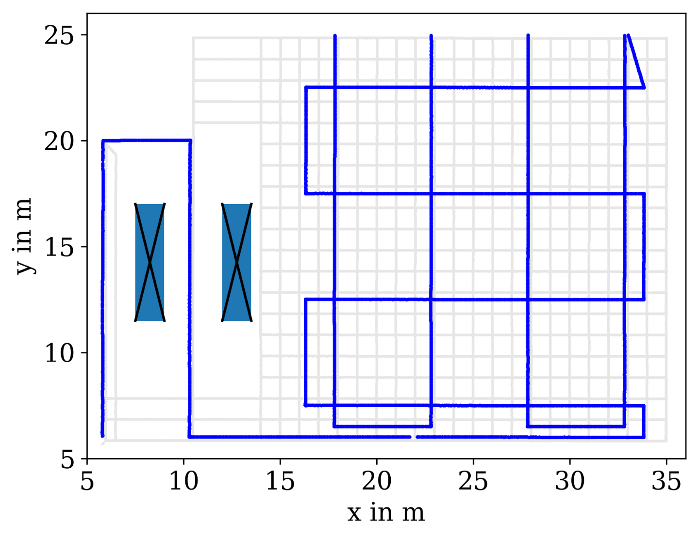
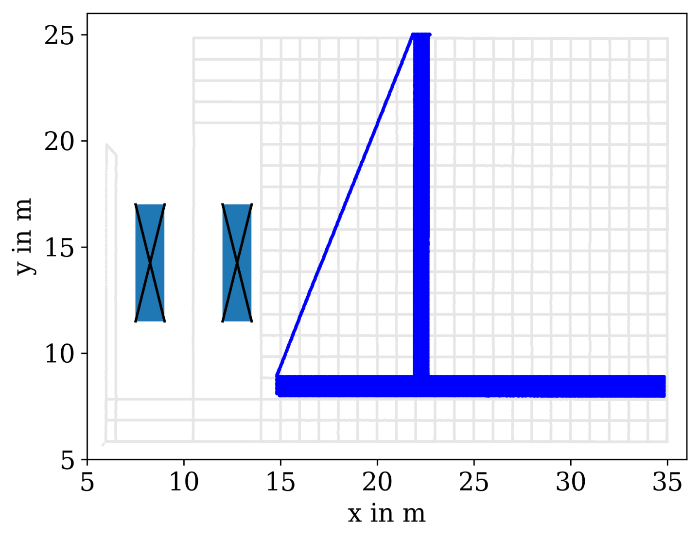
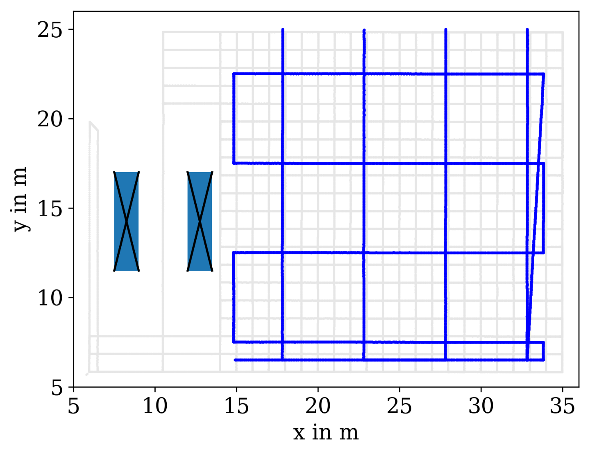
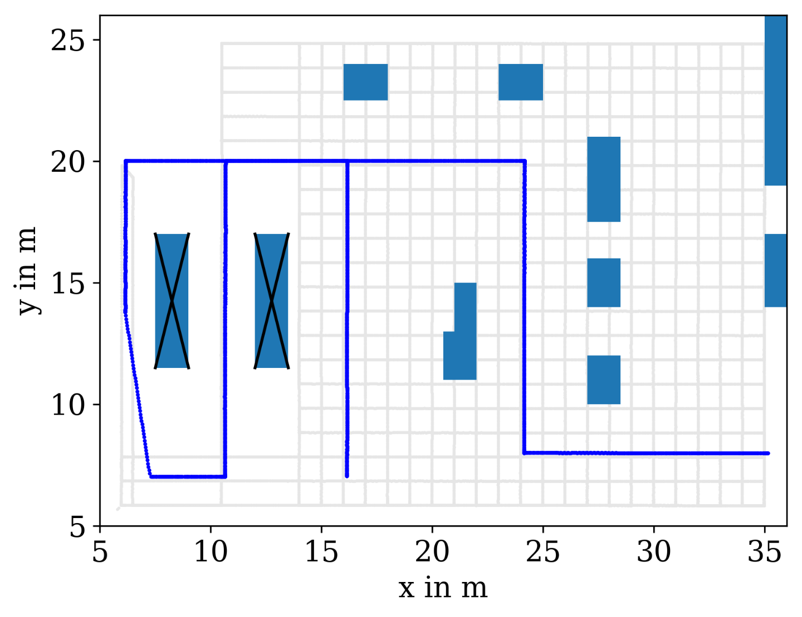

With our data set Warehouse we offer a solid basis for the development and evaluation of ML-based positioning concepts for your indoor localization in industrial settings.
Table of Contents
Basic Information
The data set covers an area of 1,320 m² with 464,804 RGB images of 640 x 480 pixels. Each image is labeled using a Nikon iGPS optical reference system at a sub-millimeter precision and less than 1 degree angular error. The images are taken from different directions with eight cameras (calibration: Logitech C270) on a 300 millimeter diameter platform. The distance between the cameras is only a few centimeters; the distance is calibrated out for the marking of the images.



The data set contains various scenarios for a detailed analysis of positioning concepts based on the evaluation criteria:
- For training two trajectories through the warehouse were recorded
- Eight trajectories serve for testing on the individual evaluation criteria.







Description of the Dataset
The complete data set is divided into an exercise and an examination folder, both containing the following subfolders. The respective partial data set is saved as a tar archive for download:
| # images | size | ||
|---|---|---|---|
| TRAINING | |||
| horizontal trajectories | 98.343 | download | 5,9 GB |
| vertical trajectories | 101.092 | download | 5,9 GB |
| TESTING | |||
| crossing | 12.375 | download | 1,1 GB |
| generalization (open space) | 72.858 | download | 4,4 GB |
| generalization (racks) | 54.915 | download | 3,7 GB |
| motion artifacts | 16.967 | download | 1,3 GB |
| large scale localization | 43.707 | download | 1,0 GB |
| small scale localization | 14.458 | download | 2,7 GB |
| scale transition | 50.303 | download | 3,9 GB |
| volatility | 17.158 | download | 1,9 GB |
For each camera in each dataset, we provide a text file that specifies the path to the captured images, the camera in question, and its position and angle of rotation (quaternion). The file structure corresponds to the following basic scheme:
path/to/[image].jpg x_pos y_pos z_pos rot_w rot_p rot_q rot_r
We also provide matrices for the calibration of each of the eight cameras here. We also included further information on how to map the matrices to the cameras.
License Agreement
The data is provided exclusively for non-commercial use. For commercial use of the data please contact us. You are welcome to cite our publication in your work.
Referencing
Please cite this article in your publication if you want to publish results based on our warehouse data set:
Löffler, C.; Riechel, S.; Fischer, J.; Mutschler, C.: Evaluation Criteria for Inside-Out Indoor Positioning Systems based on Machine Learning. In: IEEE (Hrsg.): Proceedings of the 9th International Conference on Indoor Positioning and Indoor Navigation (9th International Conference on Indoor Positioning and Indoor Navigation, Nantes, France)., 2018, S. – (BibTeX)